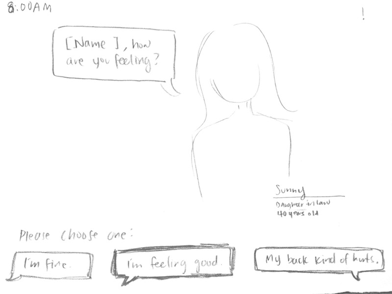
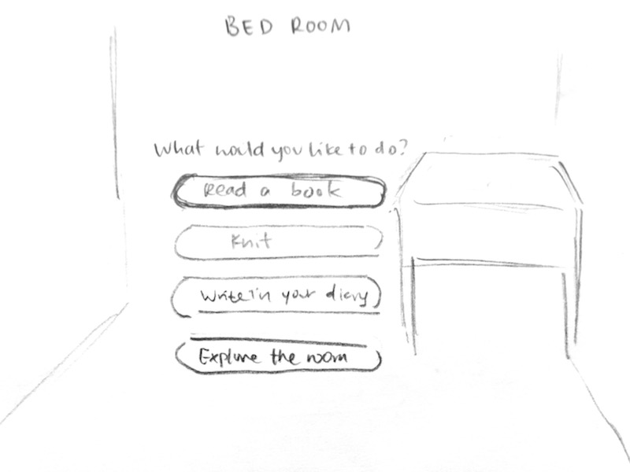

Final
This prototype shows how a user would go about navigating the pages. The user would begin by submitting their information. A screen showing the time will begin the story. The user is able to choose options for replies in conversations. When the user is left alone in the game, the user would have options to perform activities to spend the day until the family comes back. Although not included in the prototype, the game ends with a brief on what the game aims to bring awareness to, as well as resources that can help assist elders and their mental health.
 